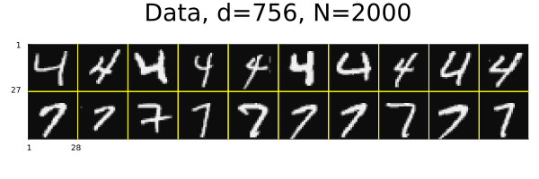
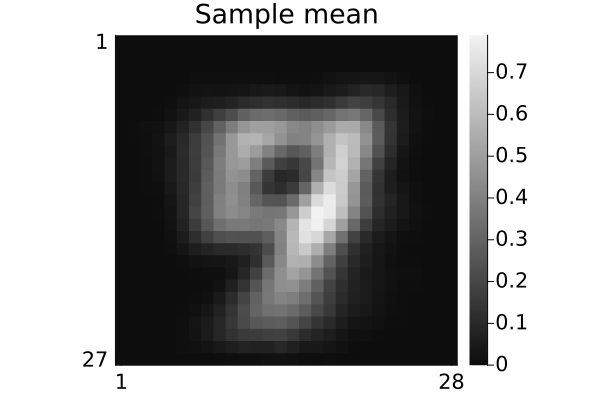
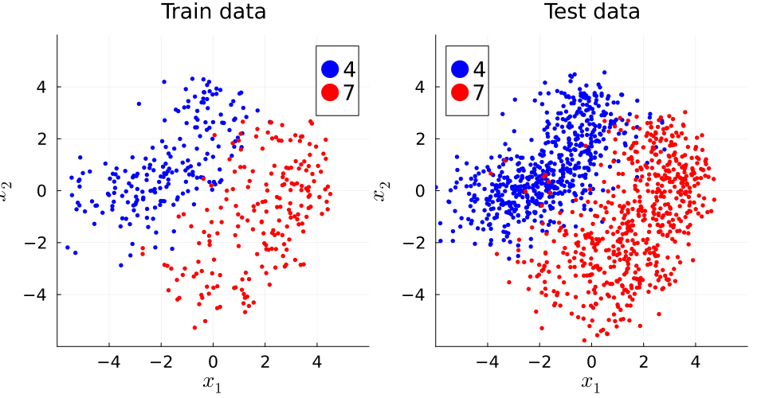
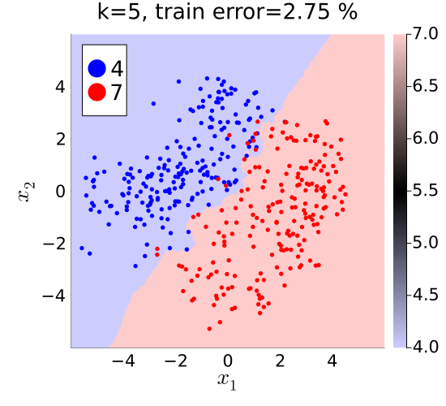
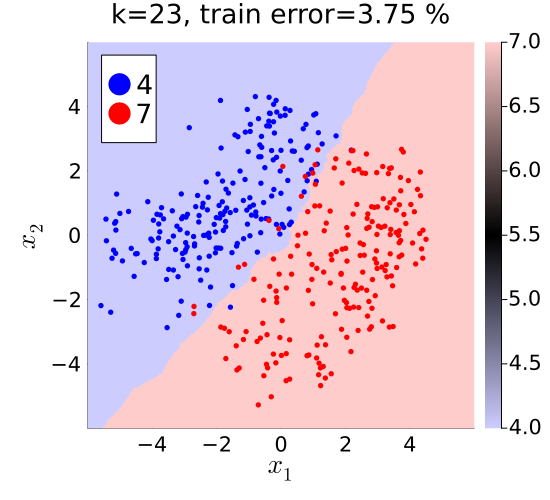
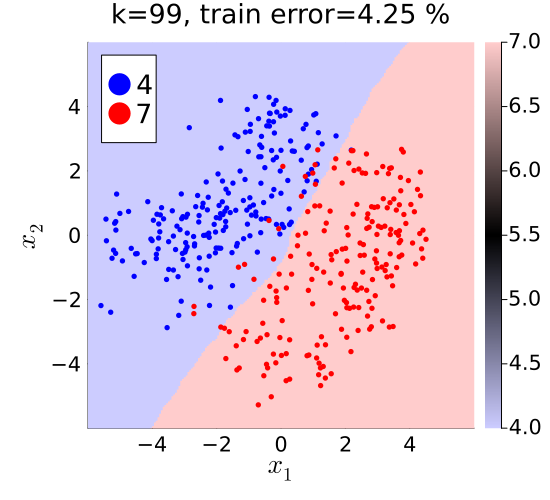
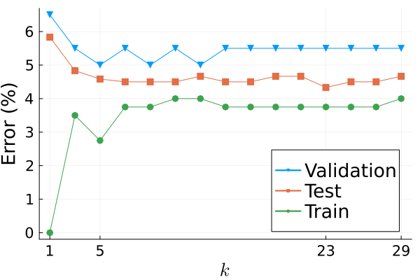
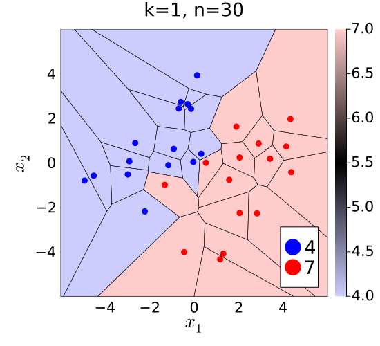
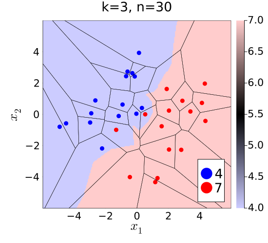

k-NN (k Nearest Neighbor) classifier demo
Illustrate K-nearest neighbors classifier with MNIST hand-written digit images in Julia.
This page comes from a single Julia file: k-nn.jl.
You can access the source code for such Julia documentation using the 'Edit on GitHub' link in the top right. You can view the corresponding notebook in nbviewer here: k-nn.ipynb, or open it in binder here: k-nn.ipynb.
Setup
Add the Julia packages used in this demo. Change false to true in the following code block if you are using any of the following packages for the first time.
if false
import Pkg
Pkg.add([
"InteractiveUtils"
"GeometryBasics"
"LaTeXStrings"
"LinearAlgebra"
"MIRTjim"
"MLDatasets"
"NearestNeighbors"
"Plots"
"VoronoiCells"
])
endTell Julia to use the following packages. Run Pkg.add() in the preceding code block first, if needed.
using GeometryBasics: Point2
using InteractiveUtils: versioninfo
using LaTeXStrings
using LinearAlgebra: svd
using MIRTjim: jim, prompt
using MLDatasets: MNIST
using NearestNeighbors: KDTree, knn
using Plots: default, gui, savefig, plot, plot!, scatter!, RGB, cgrad
using Random: randperm, seed!
using VoronoiCells: voronoicells, Rectangle
default(); default(markersize=3, markerstrokecolor=:auto, label="",
tickfontsize=14, labelfontsize=18, legendfontsize=18, titlefontsize=18)The following line is helpful when running this file as a script; this way it will prompt user to hit a key after each figure is displayed.
isinteractive() ? jim(:prompt, true) : prompt(:draw);Load data
Read the MNIST data for some handwritten digits. This code will automatically download the data from web if needed and put it in a folder like: ~/.julia/datadeps/MNIST/.
if !@isdefined(data) || true
digitn = [4,7] # which digits to use
isinteractive() || (ENV["DATADEPS_ALWAYS_ACCEPT"] = true) # avoid prompt
dataset = MNIST(Float32, :train)
nrep = 1000 # how many of each digit
# function to extract the 1st `nrep` examples of digit n:
data = n -> dataset.features[:,:,findall(==(n), dataset.targets)[1:nrep]]
data = cat(dims=4, data.(digitn)...)
labels = vcat([fill(d, nrep) for d in digitn]...) # to check later
nx, ny, nrep, ndigit = size(data)
data = data[:,2:ny,:,:] # make images non-square to force debug
ny = size(data,2)
size(data) # (nx, ny, nrep, ndigit)
end(28, 27, 1000, 2)Look at some of the image data
pd = jim(data[:,:,1:10,:], "Data, d=$(nx*ny), N=$(nrep*ndigit)";
colorbar=nothing, size=(600,200), tickfontsize=6, ncol=10)
# savefig(pd, "knn-digit-47.pdf")
Partition data into train / validate / test
ntrain = 200
nvalid = 100
ntest1 = 600
seed!(0)
tmp = randperm(nrep)
itrain = (1:ntrain)
ivalid = (1:nvalid) .+ ntrain
itest1 = (1:ntest1) .+ (ntrain + nvalid)
dtrain = data[:,:,tmp[itrain],:]
dvalid = data[:,:,tmp[ivalid],:]
dtest1 = data[:,:,tmp[itest1],:];mean training image
dmean = sum(dtrain, dims = 3:4) / ntrain / ndigit
pm = jim(dmean; title="Sample mean")
# savefig(pm, "knn-mean.pdf")
PCA-based dimensionality reduction
Use two components for easy visualization
X = reshape(dtrain .- dmean, nx*ny, :) # unfold
K = 2 # reduced dimension
U = svd(X).U[:,1:K];Show basis vectors
tmp = reshape(U, nx, ny, K)
pu = jim(tmp; title="Basis functions, K=$K", color=:cividis, size=(700,400))
# savefig(pu, "knn-u.pdf")
if false # use small data sample for Voronoi plots only
ntrain = 15
dtrain = dtrain[:,:,1:ntrain,:]
endEmbed data and label
embed(data, n) = reshape(U' * reshape(data .- dmean, nx*ny, :), K, n, :)
Xtrain = embed(dtrain, ntrain) # (K, ntrain, ndigit)
Xvalid = embed(dvalid, nvalid)
Xtest1 = embed(dtest1, ntest1)
labeler(n) = vcat([fill(digitn[id], n) for id in 1:ndigit]...)
ytrain = labeler(ntrain) # (ntrain*ndigit)
yvalid = labeler(nvalid)
ytest1 = labeler(ntest1);Visualize embedded data
args = (;
xaxis = (L"x_1", (-1,1) .* 6, -4:2:4),
yaxis = (L"x_2", (-1,1) .* 6, -4:2:4),
aspect_ratio = 1,
size = (550, 500),
)
colors = (:blue, :red)
function plot_data(X::Array{<:Real,3}; title::String = "")
p = plot(; title, args...)
for id in 1:ndigit
scatter!(p, X[1,:,id], X[2,:,id], label="$(digitn[id])",
color = colors[id])
end
return p
end
petr = plot_data(Xtrain; title = "Train data")
pete = plot_data(Xtest1; title = "Test data")
pp = plot(petr, pete; size = (950, 500))
# savefig(pp, "knn-data.pdf")
prompt()Construct k-NN classifier
function knn_setup(X::AbstractArray{<:Real,3}, y::Vector)
n = length(y)
data_tmp = reshape(X, size(X, 1), n) # (K, n)
tree = KDTree(data_tmp)
i2label = i -> getindex(y, i)
function knn_class(point::AbstractVector, k::Int)
idx, _ = knn(tree, point, k)
labels = sort(i2label.(idx))
return labels[k÷2+1] # majority vote
end
return knn_class
end
knn_classifier = knn_setup(Xtrain, ytrain)
x1_range = range(-6, 6, 221)
x2_range = range(-6, 6, 223)
α = 0.2
color = cgrad([RGB(1-α, 1-α, 1), :black, RGB(1, 1-α, 1-α)])
function knn_plot(k::Int, error;
X = Xtrain,
title = "k=$k, train error=$error %",
knn_classifier::Function = knn_classifier,
)
error = round(error; sigdigits=2)
tmp = [knn_classifier([x1; x2], k) for x1 in x1_range, x2 in x2_range]
p = jim(x1_range, x2_range, tmp; color, title, prompt = false, args...)
for id in 1:ndigit
scatter!(p, X[1,:,id], X[2,:,id],
color = colors[id],
label = "$(digitn[id])",
)
end
return p
end;Classification errors
for train / validate / test
klist = 1:2:min(30, ntrain)
function errors(data, label, klist)
data = reshape(data, K, :) # (d, n)
return [count(knn_classifier.(eachcol(data), k) .!= label) for k in klist] /
size(data, 2) * 100
end
train_error = errors(Xtrain, ytrain, klist)
valid_error = errors(Xvalid, yvalid, klist)
test1_error = errors(Xtest1, ytest1, klist);Decision regions for various k
p1 = knn_plot(1, train_error[1])
# savefig(p1, "knn-k=1.pdf")
p5 = knn_plot(5, train_error[only(findall(==(5), klist))])
# savefig(p5, "knn-k=5.pdf")
p23 = knn_plot(23, train_error[only(findall(==(23), klist))])
# savefig(p23, "knn-k=23.pdf")
p99 = knn_plot(99, only(errors(Xtrain, ytrain, [99])))
# savefig(p99, "knn-k=99.pdf")
Plot error rates
k_valid = klist[argmin(valid_error)] # best k for validation data
k_test1 = klist[argmin(test1_error)] # best k for test data
default(markersize = 5)
pe = plot(
xaxis = (L"k", (1,klist[end]), [1, k_valid, k_test1, klist[end]]),
yaxis = ("Error (%)", ),
widen = true,
)
plot!(klist, valid_error, marker=:downtri, label="Validation")
plot!(klist, test1_error, marker=:square, label="Test")
plot!(klist, train_error, marker=:o, label="Train")
# savefig(pe, "knn-error.pdf")Function to add Voronoi cells to a k-NN plot
function add_voronoi!(pp, X; xmax = 6)
tmp = eachcol(reshape(Float64.(X), K, :))
points = Point2.(tmp)
# Bounding box to clip the infinite outer cells
rect = Rectangle(Point2(-1, -1)*xmax, Point2(1, 1)*xmax)
tessellation = voronoicells(points, rect)
for (i, cell) in enumerate(tessellation.Cells)
# Extract x and y coordinates of the cell vertices
x_coords = [vertex[1] for vertex in cell]
y_coords = [vertex[2] for vertex in cell]
# Close the polygon by repeating the first vertex
push!(x_coords, x_coords[1])
push!(y_coords, y_coords[1])
# Draw the cell polygon
plot!(pp, x_coords, y_coords, linecolor = :black, linewidth = 0.5,)
end
return pp
endadd_voronoi! (generic function with 1 method)Voronoi plots
Per 553 student question, for small n
nshow = 15
Xshow = Xtrain[:,1:nshow,:]
yshow = vec(reshape(ytrain, ntrain, ndigit)[1:nshow,:])
knn_classifier = knn_setup(Xshow, yshow)
v1 = knn_plot(1, NaN;
X = Xshow, knn_classifier, title = "k=1, n=$(nshow*ndigit)")
add_voronoi!(v1, Xshow)
# savefig(v1, "voronoi-k=1.pdf")
prompt()
v3 = knn_plot(3, NaN;
X = Xshow, knn_classifier, title = "k=3, n=$(nshow*ndigit)")
add_voronoi!(v3, Xshow)
prompt()
# savefig(v3, "voronoi-k=3.pdf")
include("../../../inc/reproduce.jl")Status `~/work/EECS553demo/EECS553demo/docs/Project.toml`
[47edcb42] ADTypes v1.24.0
[e30172f5] Documenter v1.19.0
[2c06267c] EECS553demo v0.0.1 `~/work/EECS553demo/EECS553demo`
⌅ [5c1252a2] GeometryBasics v0.4.11
[b964fa9f] LaTeXStrings v1.4.1
[98b081ad] Literate v2.21.0
[7035ae7a] MIRT v0.18.3
[170b2178] MIRTjim v0.26.0
[eb30cadb] MLDatasets v0.7.21
[b8a86587] NearestNeighbors v0.4.29
[429524aa] Optim v2.3.1
⌃ [91a5bcdd] Plots v1.41.4
[10745b16] Statistics v1.11.5
[e3e34ffb] VoronoiCells v0.4.0
[b77e0a4c] InteractiveUtils v1.11.0
[37e2e46d] LinearAlgebra v1.12.0
[44cfe95a] Pkg v1.12.1
[9a3f8284] Random v1.11.0
Info Packages marked with ⌃ and ⌅ have new versions available. Those with ⌃ may be upgradable, but those with ⌅ are restricted by compatibility constraints from upgrading. To see why use `status --outdated`This page was generated using Literate.jl.